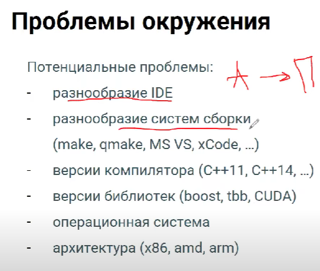
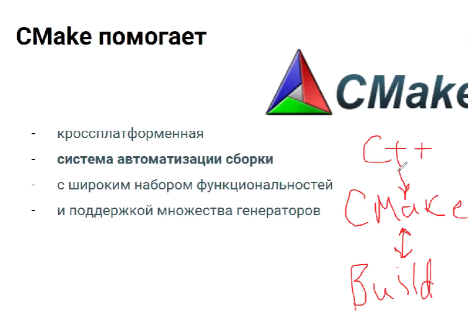

Сборка с CMake
Описание целей, выбор стандарта и команды сборки.
Дополнительное введение в CMake
CMake описывает сборку проекта для разных систем и компиляторов.


CMakeLists.txt
cmake_minimum_required(VERSION 3.10)
project(Calc)
set(CMAKE_CXX_STANDARD 17)
add_executable(calc main.cpp calculator.cpp)